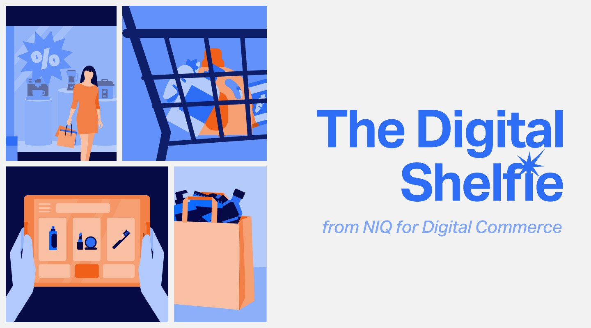
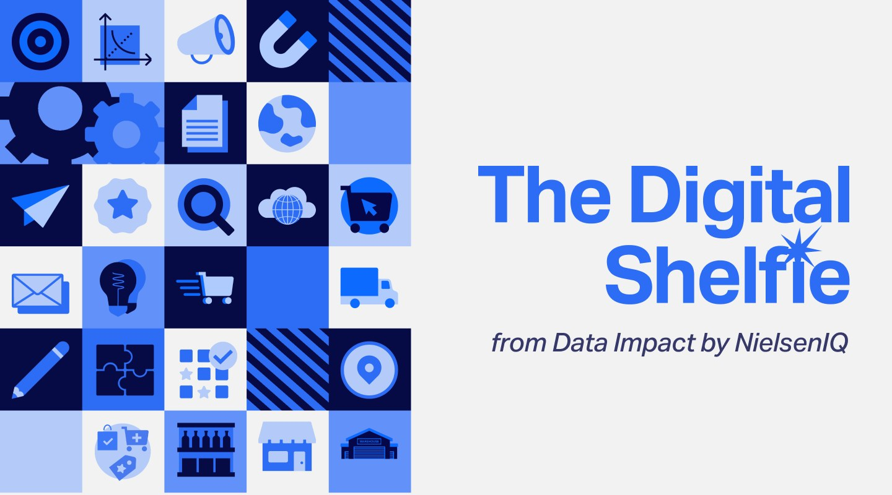
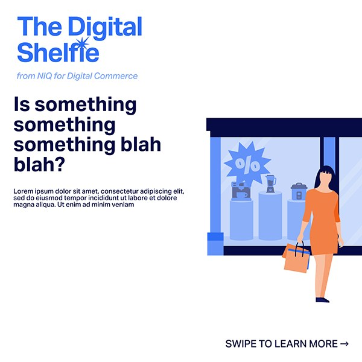
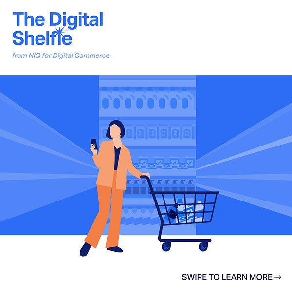
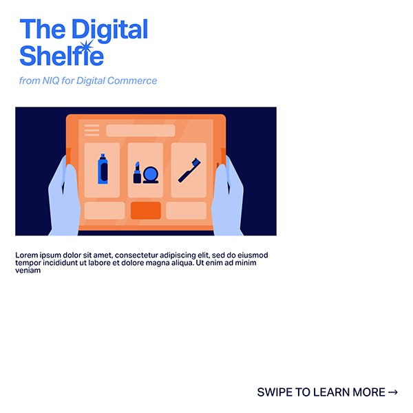
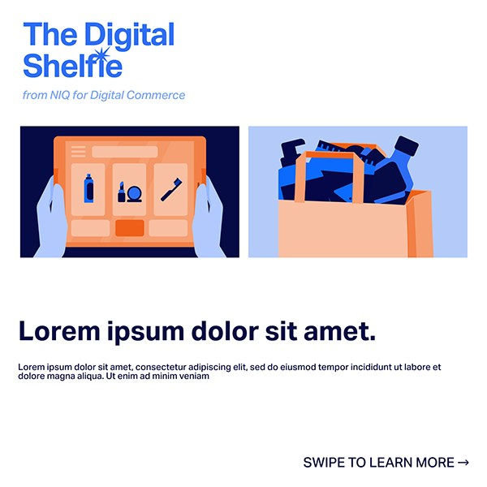
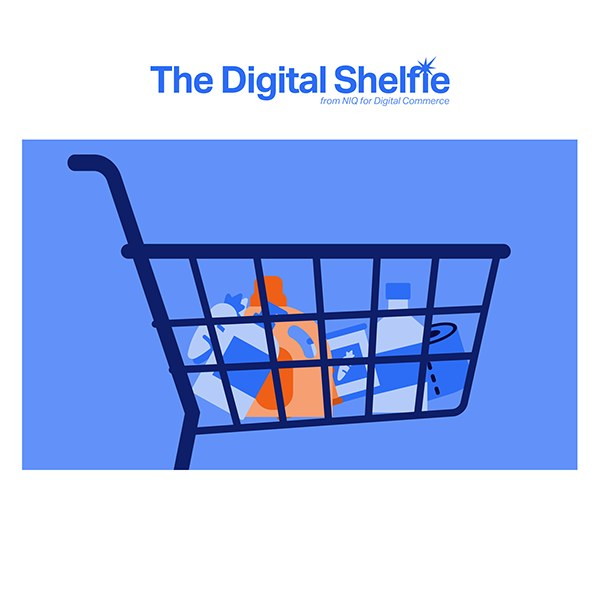

Case study · Editorial
The Digital Shelfie: newsletter redesign
A rebrand that turned NIQ for Digital Commerce's monthly newsletter from a generic corporate update into a recognisable, engaging editorial piece.
- Client
- NIQ for Digital Commerce
- Year
- 2025
- Role
- Lead designer & illustrator
- Scope
- Identity, email templates, illustration

Overview
The Digital Shelfie is NIQ for Digital Commerce's monthly newsletter about trends, insights and innovation in e-commerce and the digital shelf. After the move to NIQ, it needed a visual identity that matched the expertise, clarity and energy of its content. I led the rebrand and visual refresh.
Goals
A distinct identity that fits the wider NIQ brand but speaks in NIQ for Digital Commerce's own voice: smart, sharp and a little playful.
- Clearer hierarchy and readability on mobile and desktop.
- More engagement through editorial-style visuals and consistent branding.
- Faster production with reusable, modular templates.
01
Audit & identity
Starting point
I audited the visuals and content of past issues and benchmarked them against industry newsletters. The pain points were clear: inconsistent formatting, poor readability and low visual retention.
The new system is modular, built on bold type, clean grids and subtle digital motifs. Colours follow NIQ's global guidelines, with added contrast and vibrancy so headlines and calls to action stand out.

02
Template system
Built to reuse
I designed responsive email templates with flexible sections for features, data highlights and calls to action, plus a library of branded illustrations and graphics that make every issue instantly recognisable. The same pieces extend to social posts promoting each issue.





Outcome
The rebrand turned an overlooked newsletter into a branded editorial touchpoint for NIQ's Digital Commerce division. It now works both as a thought-leadership vehicle and as a design benchmark for future internal communications.